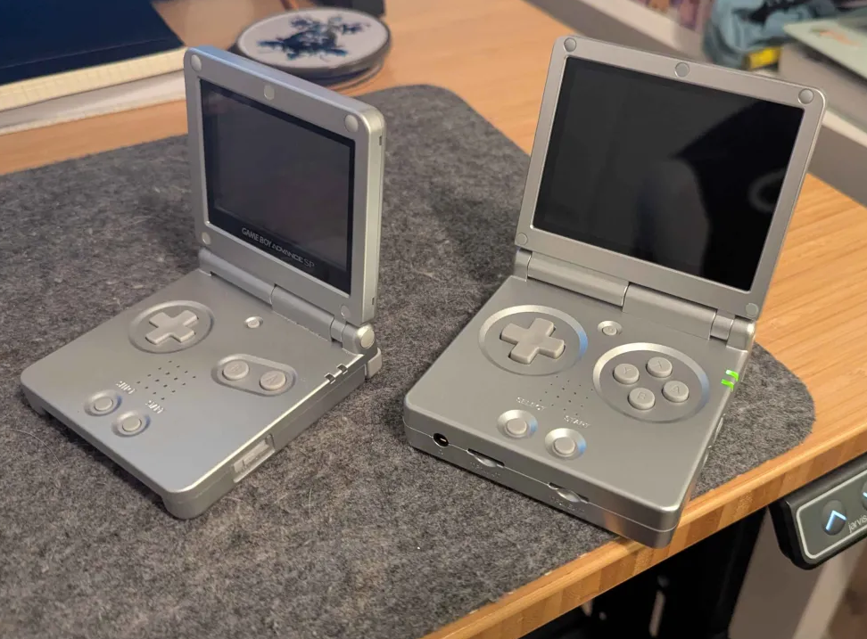
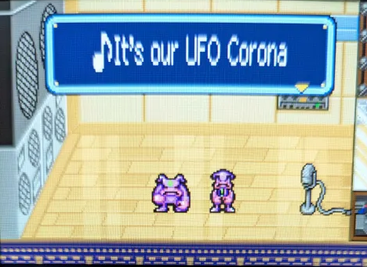

April has swung by already and it's time for another game of the month review. This month, with our theme of Region Locked (that is, games never released in North America), we played Tomato Adventure for the GBA.
Last month, my partner wanted to try our game of the month, which was Super Castlevania IV, but didn't feel comfortable playing it on her phone. So I ended up doing the very sane thing of buying a new emulation device.
I already owned a Miyoo Mini Plus, which I bought in the summer of 2024. I'd played a couple of games on it, and was enjoying using it, but FOMO is strong and I kept being recommended new devices.
After a long deliberation, I finally decided to get my hands on what is essentially a Gameboy Advance SP clone, the Anbernic RG35XX SP, pictured here next to my actual Gameboy Advance SP.

I spent a bit more time tweaking it than I'd hoped, but I really enjoy the tactility of it, better than the Miyoo. That said, I haven't found an OS for it that slaps as much as OnionOS. I've settled on MuOS for now, but we'll see if I decide to change eventually.
This month, I played Tomato Adventure on that console.
Tomato Adventure is our first JRPG with the group, and I think it's a perfect time to talk about my thoughts on the genre.
I don't hate JRPG’s. I also didn't grow up with JRPG’s (unless you count Pokémon as a JRPG, which I don't).
My first Final Fantasy game was FFIV on the SNES, but when I played it, FFXIII was already out. The game was already quite solidly considered retro at that point. I say this because I think FFIV was my first JRPG experience.
I don't like the gameplay of pretty much all the JRPG's I've tried, and I've tried many, finishing only a handful. This is an issue somewhat similar to Tactical RPG’s I outlined in my Advance Wars review. But I think there's one big difference, and that is my amount of patience for the gameplay.
Both Tactical RPG's and JRPG's appeal to me for the same two reasons: the story and the worldbuilding. But the key difference is that I find the JRPG gameplay loop mostly just boring and repetitive as opposed to frustrating. If there's not much grinding and the story is interesting enough, and it doesn't take 80 hours to unfold, I can even finish the whole game! That's how I managed to play Chrono Trigger until the end last year! The fact that there are no random encounters stopping you in your tracks when you're just trying to walk from point A to point B definitely helped too.
But, this isn't a review of Chrono Trigger. Let's talk about Tomato Adventure.
Tomato Adventure was released in 2002 for the GBA, making it the most recent game we've played in the club so far. The game was made by AlphaDream, who would go on to make the Mario and Luigi series. And that really shows - you can tell the developers were trying things that would end up in their subsequent series.
I haven't played any of the Mario and Luigi games, nor have I played Super Mario RPG, but I'm told this game was very close in tone and presentation to them.
For me, Tomato Adventure reminded me a lot of Earthbound (which is a JRPG I finished). There's a similarity in humour and tone, in being kids in whacky situations. But, where Earthbound was able to take this at an amazing pacing, Tomato Adventure felt flat. I still can't put my finger on it, but there's something…unpolished? about the game. There are a couple of issues a bit everywhere, from the specials mechanics to the inability of the game to try and add any character depth. I just couldn't get really into it.
And I think that's what it's leaving me with. A disappointment. Because I can tell the game had a lot of potential, and there were some genuinely funny scenes.

But it couldn't quite get to a point where I thought it was good. This game could've been more, but it just isn't.
Still better than Blast Corps.
April was a bit of a crazy month for me. I don't foresee May being much better. In fact, quite the opposite.
Still, for May, the group has chosen Parasite Eve for the PS1. Another JRPG, at a time when I'm growing tired of them. I don't expect to get much out of this game, but hey, maybe I'll be wrong.
See you next month when I'm either very surprised or very tired. Maybe both.